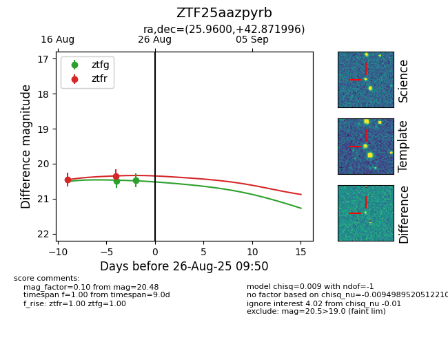

Target ZTF25aazpyrb at 2025-08-26 09:55, see:
FINK: fink-portal.org/ZTF25aazpyrb
Lasair: lasair-ztf.lsst.ac.uk/objects/ZTF25aazpyrb
ALeRCE: alerce.online/object/ZTF25aazpyrb
alt names
ZTF25aazpyrb (ztf,fink)
coordinates:
equatorial (ra, dec) = (25.9600,+42.87200)
galactic (l, b) = (133.0485,-18.96803)
photometry
last ztfg=20.48, ztfr=20.35
2 ztfg, 2 ztfr detections
